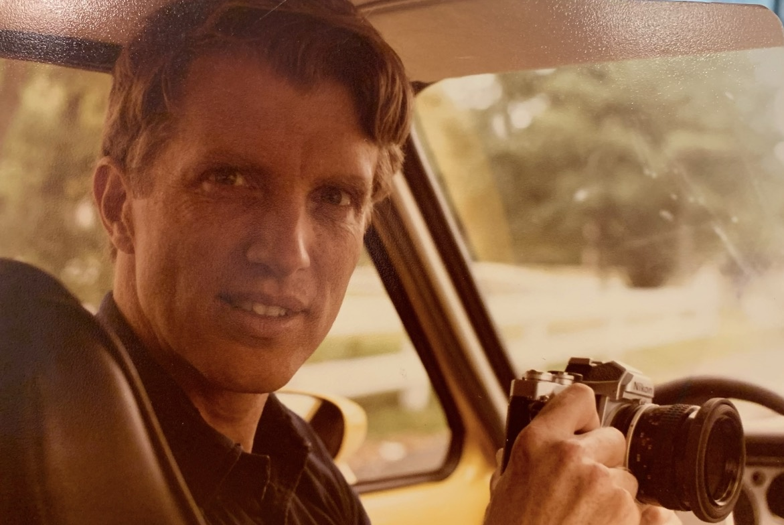
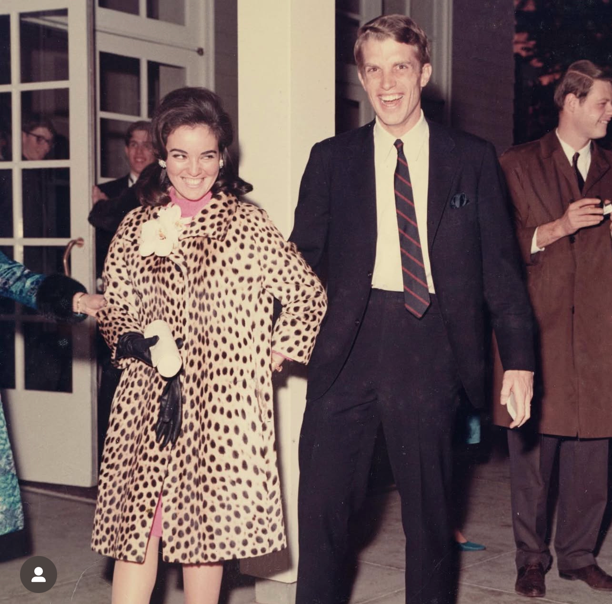

William Baker Haley
June 24, 1941 – February 16, 2026
William Baker Haley, beloved husband, father, grandfather, brother, passed away peacefully surrounded by loved ones.
Bill was born on June 24, 1941, in Indianapolis, Indiana, to Ora Ben Haley, Jr. and Helen Baker Haley. He spent his early years at his family’s home and farm in Lakewood, Colorado — known as Junglewood.
Bill attended Regis High School in Denver before graduating from the University of Notre Dame and later earning his law degree from the University of Chicago Law School. His education shaped his lifelong commitment to public service and faith.
Early in his career, Bill spent time in Tennessee and New York working in civil rights and legal services, providing legal assistance to underserved communities during a period of profound social change in the United States.
Throughout his professional life, Bill devoted himself to public-interest law and nonprofit advocacy in New York City. He worked with Legal Services NYC, providing legal assistance and advocacy for low-income individuals and families, particularly in matters involving housing, family stability, and civil rights. He also worked with the Single Parent Resource Center, Inc., helping expand resources and legal support for single-parent families, and collaborated with tenant advocacy efforts in New York City led by community organizer Gloria Milliken, assisting residents in securing housing protections and fair treatment. He further contributed his time to organizations addressing poverty and senior welfare, including Meals on Wheels.
Among his notable professional contributions, Bill served as amicus curiae counsel on behalf of the Community Service Society of New York in Smith v. Organization of Foster Families for Equality & Reform, 431 U.S. 816 (1977), a landmark United States Supreme Court case addressing the constitutional due-process rights of foster families when children are removed from their homes. Earlier in his career, he appeared as counsel in public-interest appellate litigation including McMillan v. Board of Education of the State of New York (2d Cir. 1970), involving education access during the early development of disability rights law, and Harris v. Rockefeller (2d Cir. 1972) and Martini v. Rockefeller (N.Y. App. Div. 1972), cases challenging aspects of New York’s public assistance system. Together, these efforts reflected Bill’s lifelong commitment to public-interest law and to advancing fairness, due process, and dignity for vulnerable families and communities.
Bill & Christine

Bill and Christine Haley
Bill met his wife, Christine Chabrol, in Chicago through what began as a reluctant blind date. Christine had traveled to the United States from Paris at the invitation of one of her mother’s clients. During her visit, the daughter of Christine’s host family agreed to go out with her boyfriend only if he arranged a date for her visiting guest from Paris. Bill, persuaded with some difficulty after two unsuccessful prior blind dates, agreed at the urging of his friends. Though they seemed an unlikely match at first — Christine always put together, rarely without heels, and Bill, taking pride in his earned holes and dirt on his clothes — their differences proved only superficial. What united them was a shared intellectual curiosity and a true and deep committed love. Family members often joked that Bill should have earned an honorary master’s in Art History from Columbia alongside Christine, after their late nights writing and studying together.
Family
Bill is survived by his loving wife, Christine Haley; his son, John F. Haley; his daughter, Francesca Chiappinelli, and his grandchildren, Sophia, Nicolas, Marco, Poppy, and Aria. He is also survived by his brothers Ben Haley, Ken Haley, Jim Haley, and Dick Haley; his sisters Peggy Sheehan and Pat Ayers; and nieces, nephews and great-nieces and great-nephews, all of whom he cherished deeply.
Bill was preceded in death by his parents, Ora Ben Haley, Jr. and Helen Baker Haley; his brothers John Haley and Tom Haley; his great-nephew Timothy Ritacco; and his brother Danny Haley, who passed away five days after Bill.
In the Junglewood Tales
Billy’s name echoes through the Junglewood stories — his steers and the infamous bulldog incident, the car adventures with Tommy and Dick, and the warmth he brought to everything he touched. His presence runs deep through the fabric of the family’s shared memory.
Thomas Durbin Haley
June 5, 1945 – November 27, 2004
Obituary — The Denver Post, December 1, 2004
A Colorado Life — “Flower broker blessed with bouquet of skills”
By Virginia Culver, Denver Post Staff Writer
Tom Haley was a flower broker, as well as an avid cyclist and an amateur actor and dancer who studied theology, science and languages.
Haley, 59, lost his 15-year battle with a brain tumor Saturday, living more than a year longer than most people with the same diagnosis.
Services will be at 10 a.m. Friday at St. Thomas Episcopal Church, 2201 Dexter St.
His attitude is what kept him going, said his wife, Elsie.
“He kept swimming and biking and exercising, hoping to get his health back to what it had been,” she said. “He had a good quality life for two years,” she said.
“He was caring, enthusiastic and had a wonderful laugh,” said a long-time friend, Jedeane MacDonald. “If I were on a ship that was sinking, I’d have wanted him on it. He would have found a way for us to float.”
Haley owned Haley Floral Resources, a flower broker, in southeast Denver.
He loved acting and dancing but knew he needed another profession to support his family. He acted locally and performed with the Munt-Brooks dancers at the Changing Scene Theatre for several years.
He joined grueling bike rides, once riding across the state of Iowa.
Recently, Haley rediscovered the guitar, which he had played in high school. He was an avid amateur photographer, focusing on family and nature.
Thomas Durbin Haley was born June 5, 1945, in Denver, a fourth-generation Coloradan. His great-grandfather, Ora Haley, was a cattle rancher in Colorado and Wyoming.
Tom Haley graduated from Regis High School. He earned a political-science degree from the University of Notre Dame in South Bend, Ind., and a master’s degree in theater from the University of Denver. He also earned a master of fine arts degree from the University of Iowa.
He met Elsie Galbreath on a blind date in college, and they married Sept. 6, 1969. She is an English professor at Metropolitan State College.
Haley came by the flower business naturally. His father, Ora Ben Haley Jr., owned Denver Wholesale Florist.
In addition to his wife, he is survived by daughter Erin Haley of Denver; son Matthew Haley of Lakewood; sisters Patricia Ayers and Margaret Sheehan, both of Denver; brothers James Haley and Richard Haley, both of Houston, Ora Ben Haley III of Denver, William Haley of New York City, Kenneth Haley of Franktown and Daniel Haley of Lakewood.
In the Junglewood Tales

Billy and Tommy with the VW
Tommy’s name runs through the Junglewood stories alongside his brothers — from car adventures with Billy and Dick to the mischief and camaraderie that defined life on the family’s Lakewood farm. His warmth, curiosity, and creative spirit left a lasting mark on everyone who knew him.
Daniel Patrick Haley
January 17, 1949 – February 20, 2026
Daniel Patrick Haley, 77, of Lakewood, Colorado passed away on February 20, 2026. Dan was born in Denver, Colorado to Ora Ben Haley Jr. and Helen Baker Haley on January 17, 1949. He spent his early years exploring and causing mischief at the family’s home and carnation farm known as Junglewood, in Lakewood, Colorado.
Dan went to high school at Cascia Hall Preparatory School in Tulsa, Oklahoma and graduated in 1968. He then earned a degree in Industrial Construction Management from Colorado State University in 1972. He worked as a Lineman, Design Engineer, and Right of Way Manager for Mountain Bell for 35 years.
Dan and Jan met in 1969 and were married on March 9, 1973. Their daughter, Tanya, was born June 11, 1979. Dan and Jan shared 57 years together, creating and enjoying an extraordinarily full and happy life.
Dan was best known for loving his family and his exuberant approach to life. He was fiercely loyal and protective as well as a reliable source of adventure and entertainment, especially with the children. He was recently referred to by one of his nieces as “a legend.” Wherever he lived, neighborhood children would frequently come to the door to ask if Dan could come out and play. He always said yes and truly loved it.
Dan loved outdoor activities — skiing, bicycling around the country with his brother Tom, riding motorcycles, running marathons, climbing Colorado’s 14ers, and anything that was suggested to be impossible.
Family
Dan is survived by his wife, Jan Haley, daughter Tanya Haley, brothers Ben Haley, Ken Haley, Jim Haley and Dick Haley, sisters Peggy Sheehan and Pat Ayers, 17 nieces and nephews, and 37 great nieces and nephews. He was preceded in death by his parents, Ora Ben Haley, Jr. and Helen Baker Haley, his brothers John Haley, Tom Haley and Bill Haley, and great nephew Timothy Ritacco.
In the Junglewood Tales
Danny was the heart and soul of the Junglewood Tales, contributing more stories than anyone else — 19 entries spanning all nine chapters. His vivid recollections, quick wit, and gift for storytelling brought Junglewood to life for readers who never walked its grounds.
From the legendary water tower painting caper to buying Uncle John’s $5 Ford station wagon to the false teeth in the glove box, Danny turned everyday moments into unforgettable narratives. He had a special talent for drawing others into the conversation — prompting Tim to tell the sand-in-the-toilet story, coaxing Jim to share the smoking incident, and challenging his brothers to remember details they thought they’d forgotten.
Danny’s stories live on throughout the Junglewood Tales, particularly in Chapters 1 through 9 — every single chapter bears his voice.